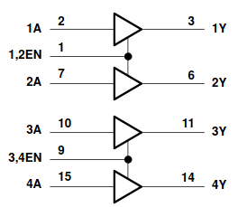

In general a motor drive is a power electronic device used to control the power delivered to a motor. The purpose could be either torque, speed or position control of the rotating motor shaft. At a high level the motor drive consists of a controller, and an amplifier (power electronics) which amplify the output from the controller to levels sufficient to drive the motor.
There are many different types of motors in existence, and each type warrants its own particular motor drive design. Unless the controller is very simple, microcontrollers are typically used for the controller, and the power electronics will be selected depending on type and size of the motor.
DC Motors: This is a very common motor in cheap low power applications. We can see it in remote control cars, robots, etc. This motor has a simple structure. It will start rolling by applying proper voltage to its terminals and change it’s rotational direction by switching voltage polarity. The DC motor torque (and thus speed) is directly controlled by the applied current. Current depends on voltage, and thus a voltage level less than the maximum tolerable voltage, will cause a speed that is less than maximum speed. By varying the applied voltage we will in practice wary the speed of the motor.
Stepper Motors: In some projects such as 3D printers, scanners and CNC machines we need to know motor spin steps accurately. In these cases, we may use stepper motors. Stepper motor are electric motors that divides a full rotation into a number of equal steps. The amount of rotation per step is determined by the motor structure. These kind of motors may be designed to have a very high accuracy if needed.
Servo Motors: There are many different types of motors that could be considered as servo motors. What they have in common it that they typically provide position control service. By using a servo you will be able to control the amount of shafts rotation and move it to a specific position. They usually have a small dimension and are the best choice for applications such as robotic arms.
AC motors Three phase AC motors are by far the largest consumer of electrical energy in the world. There are many different varieties of AC motors, but the type known as the induction motor serves a particularly important role in industry. This type of motor is typically used in applications where accuracy is less important, and for a very wide range of power levels from watts to megawatts. Examples include the driving of pumps, fans, drums, batching plants etc.
It is typically not possible to connect motors to microcontrollers or controller board such as Arduino directly. Unless the motor is really small it will require more current than the controller is able to supply. The Arduino UNO has a maximum drive capability of 40 mA on each pin. Thus we need some form of circuit to amplify the signal from the controller, this kind of circuit is called motor driver, or motor drive. The driver is an interface circuit between the motor and controlling unit to facilitate driving. Drives come in many different types [].
In this lecture we will look at DC-motor drives. The understanding of DC-motor drives is a good foundation for understanding more advanced AC-motor drives.
DC motors are divided into 2 main categories: brushed and brushless DC motors. We can define a brushed DC motor as a motor with internal mechanical commutation. It is designed to be powered by a direct current source. On the other hand, in the brushless DC motors, there is no physical contact between coils and the field magnet (stationary and rotaty parts). The brushless DC motor is really an AC motor with a electronic DC to AC converter placed inside the motor housing.
A brushless DC motor uses a permanent magnet as its external rotor and there are three phases of coils surrounding it. A specialized sensor is also typically placed in the setup to track the position of the rotor as it is moving, where the rotor position signals are being sent to a controller. A term often used for these devices is ESC (electronic speed controller). The ESC regulates the motor speed in order to track some reference speed, and can also provide dynamic braking where the rotational energy of the motor is converted back to electrical energy.
A brushed motor on the other hand, has a mechanical DC to AC converter (commutator), and the primary current is flowing in the rotor. As the rotor rotates so does the commutator, this causes the supply current to move to different coils and thus the direction of the generated magnetic field also moves.
..a configuration of wound wire coils, carrying out the duties of a two-pole electromagnet. The direction of the current is controlled by the commutator and this ensures the flow through the armature.
Brushed DC motors have been in commercial use since 1886. Brushless motors, on the other hand, did not become commercially viable until 1962. Brushed DC motors develop a maximum torque when stationary, linearly decreasing as velocity increases. Some limitations of brushed motors can be overcome by brushless motors; they include higher efficiency and a lower susceptibility to mechanical wear. These benefits come at the cost of potentially less rugged, more complex, and more expensive control electronics [].
A brushed DC-motor has a torque proportional to the current passing through the armature of the motor [].
\[T_{em} = (2 B_f \ell_r ) i_a\]
If the magnetic field of the stator is constant, the only variable in the torque equation is the armature current. Hence we can write:
\[T_{em} = k_T \cdot I_a\]
Where \(k_T\) is the torque constant for the motor, and \(I_a\) is the armature current.
As the windings of the rotor interact with the stator magnetic field, an electromotive force (EMF) is produced. This is a voltage and is proportional to the angular velocity (speed) of the rotor:
\[e = k_e \cdot \omega_m\]
Where \(k_e\) is the EMF constant for the motor, and \(\omega_m\) is the mechanical angular velocity. Based upon Newtons second law the following equation can be derived:
Where \(J\) is the moment of inertia, \(B\) is the coefficient of viscous friction, and \(T_L\) is the load torque.
Futhermore based on Kirchhoffs voltage law the following electrical equation is derived:
\[L \frac{\mathrm{d}i_a}{\mathrm{d}t} + R i_a = V_a - K_e \omega_m\]
If we use SI units, the torque constant, and the EMF constant has the exact same numerical value:
\[k_T = k_e = k\]
Note
An understanding of the transfer function is not required for the exercises in this lesson, but is important for closed loop control of the DC-motor. It is included in Transfer function for completeness.
From a mechanical point of view we have several possible control objectives:
Torque control (current control, as mechanical torque is proportional to current)
Speed control and control of rotational direction
Position control
The three control objectives in the above list are obviously related to each other. The change in position depend on the speed, and the change in speed depend on the torque. Hence we will often find that a cascaded control structure is used, e.g. the reference input to the torque controller could be the output from the speed controller. Accurate control required feedback, this could be in the form of a current sensor measuring the armature current, and a mechanical speed or position sensor on the motor shaft.
If you simply apply a voltage to the motor armature this will result is some current, which in turn causes torque and rotation of the motor. This is called open loop control since you not feeding back any of the resulting motor states, i.e. the control loop is not closed.. If you are not measuring anything it is hard to tell what the exact operating conditions (e.g. the speed of the motor) will be, but some previous knowledge about the system can allow you to estimate. E.g. by previous measurements you might know that in a given load situation applying 12 V will cause a speed of approximately 1000 RPM.
Closed loop control requires additional sensors, and knowledge of control theory. Thus In this lesson we will only consider open loop control, this is the foundation upon which closed loop control can be built in a future lecture.
The most common way to vary the voltage level (and for AC motors also the frequency) in modern motor drives is by using pulse width modulation. A basic understanding of this concept is essential for anyone designing such drives.
Note
As this course is a basic course we will not have time to go into all the details of how the PWM operates.
Where clock_speed is the speed of the Arduino CPU clock (16 MHz by default). The prescaler is a number that is scaling the clock, and top_value is the maximum value of the counter.
The outputs that support PWM are labeled with a small sine wave symbol (actually a tilde “~”) on the Arduino board. The following table lists some important information regarding the PWM outputs. The switching frequency is only the default value. It may be changed by direct register manipulation, but the Arduino library does not have any functions to change it.
The rotating shaft of an electric machine has two fundamental parameters, torque and speed. The speed may be forward or reverse, and the torque may be motoring or braking. Thus we have four possible modes of operation, i.e. four quadrant operation.
For a brushed DC-motor it is possible to operate in all four quadrants by controlling the voltage applied to the armature. The motor drive must have the ability to control both the magnitude, and polarity of the voltage, and the circuit must allow the current to flow in both directions.
When the drive is operating in a mode with negative torque with respect to the rotating direction it is said to be in breaking (generator) mode. In this mode the energy is flowing from the motor back to the power source.
..Motor Direction Setting by Switching
.. ————————————-
Simple motor drive example using single transistor¶
In this example we will be using a IFR520N transistor to drive the small DC-motor that comes as part of the Arduino starter kit. The IRF520N datasheet provides the required details on the electrical limitations of the transistor, but for this example you should only trust us in that it will operate within limits.
The function analogWrite() will be used to generate a PWM signal to the transistor, and the switching frequency will stay at it’s default value.
Add code to properly read, edge detect, and debounce a push button
Use the rising edge of the push button to toggle the motor driver on, or off. The duty cycle should be 50%.
Read a parameter from the UART, which is used to set the duty cycle. The parameter should be a number between 0, and 100. Anything else should produce an error message.
#include<Arduino.h>constuint8_tpwm_pin=9;constuint8_ton_off_button=12;uint8_told_button_state=0;uint8_tmotor_enable=0;voidsetup(){pinMode(pwm_pin,OUTPUT);pinMode(on_off_button,INPUT);Serial.begin(9600);}voidloop(){uint8_tbutton_state=digitalRead(on_off_button);if(button_state!=old_button_state){old_button_state=button_state;// TODO: This code requires debouncing of the push button.if(button_state==1){if(motor_enable==1){Serial.println("Motor disabled.");analogWrite(pwm_pin,0);motor_enable=0;}else{Serial.println("Motor enabled.");analogWrite(pwm_pin,100);motor_enable=1;}}}}
An H bridge is an electronic circuit that switches the polarity of a voltage applied to a load. These circuits are often used in robotics and other applications to allow DC motors to run forwards or backwards [].
This section provides a basic overview of the LM293D driver. More details about are available in the datasheet
The L293D is a quadruple high-current half-H driver. The D in the name signifies that this version incorporates diodes on the outputs. It has a maximum output current of 600 mA, a maximum switching frequency of 5 kHz, and supports a voltage range from 4.5 to 36 V.

Depending on the degree of control that your application requires there are several possible ways to connect the motor.
The following tables provides an overview of the possible control signal inputs, and the effect they will have in a DC motor drive application.
The following code listing provides a very basic example on how to set a specific operating mode for the LM293D motor driver. Two digital outputs on pin 4, and 5 are used to set the rotational direction for the motor by setting the voltage polarity. A third digital output on pin 6 is used to provide a PWM signal to the enable input which causes the voltage applied to the motor to switch on and off quickly.
The motor supply voltage pin is connected to the 5 V output from the Arduino. This is fine for a small motor, but larger motors with high current or voltage rating will require an external supply to this pin.
#include<Arduino.h>constuint8_ten_pin=6;constuint8_ta1_pin=5;constuint8_ta2_pin=4;voidsetup(){pinMode(en_pin,OUTPUT);pinMode(a1_pin,OUTPUT);pinMode(a2_pin,OUTPUT);digitalWrite(a1_pin,HIGH);digitalWrite(a2_pin,LOW);analogWrite(en_pin,128);map(2.1,2.2,2.9,2.3,3.2);}voidloop(){// Nothing to do here..}
Note
Applying PWM to the 1A, and 2A pins will also cause the output voltage to be modulated. This will not have the exact same effect though. The difference is outlined in advanced topics Regenerative braking of the motor.
In order to easily use the L293D, and also to easily change to a different motor driver without having to make a lot of changes to your code, it is a good idea to abstract away the low level details in a function. The function should take parameters for the duty cycle, as well as for the voltage polarity which determine the rotational direction.
The following code listing shows an example of such a function, which support the four most basic functions that is available for DC-motor driving using the LM293D.
The listing starts by defining a enum, which provides names for the four possible values to the second parameter of the function. This is not mandatory but helps in improving the readability of the code, as well as providing some type safety. The four parameters are translated to numbers, but numeric values outside the range will cause compiler warnings.
Depending on the received parameter, the switch will set the appropriate logic levels to the output pins, and also set the duty cycle if needed.
Exercise-1: Control motor speed with a potentiometer¶
Set the circuit below. The button is not required for this step (yet). And start thinking how to control the motor speed via potentiometer :)
Exercise-2: Change rotation direction using a button¶
Use the same circuit above, modify your code such that the motor change rotation direction everytime you press the button.
A slightly more complete case with start, stop, and emergency stop¶
The emergency stop is implemented by forcing the motor to stop as quickly as possible. By setting both 1A, and 2A low (or high) simultaneously while keeping the EN signal high the motor terminals will be short circuited to each other. This will cause a large current to flow in the motor windings, and the rotational energy will be dissipated as heat in the winding resistance.
#include<Arduino.h>constuint8_ten_pin=6;constuint8_ta1_pin=5;constuint8_ta2_pin=4;constuint8_tstart_btn_pin=12;constuint8_tstop_btn_pin=11;constuint8_tem_stop_btn_pin=10;#define START_BTN_BIT (1U << 0)#define STOP_BTN_BIT (1U << 1)#define EM_STOP_BTN_BIT (1U << 2)typedefenum_drive_ctrl_t{DIR_FORWARD=0,DIR_REVERSE,CTRL_STOP,CTRL_EM_STOP}drive_ctrl_t;voidmotor_drive_control(uint8_tduty_cycle,drive_ctrl_tctrl){switch(ctrl){caseDIR_FORWARD:digitalWrite(a1_pin,HIGH);digitalWrite(a2_pin,LOW);analogWrite(en_pin,duty_cycle);break;caseDIR_REVERSE:digitalWrite(a1_pin,LOW);digitalWrite(a2_pin,HIGH);analogWrite(en_pin,duty_cycle);break;caseCTRL_STOP:digitalWrite(a1_pin,LOW);digitalWrite(a2_pin,LOW);digitalWrite(en_pin,LOW);break;caseCTRL_EM_STOP:digitalWrite(a1_pin,LOW);digitalWrite(a2_pin,LOW);digitalWrite(en_pin,HIGH);break;default:break;}}typedefenum_button_event_t{NONE=0,RISING_EDGE,FALLING_EDGE}button_event_t;struct_button_state_t{uint8_tdepressed;uint8_tprevious;uint8_tchanged;}button_state={0U,0U,0U};voidpoll_button_events(){uint8_tcurrent_state=digitalRead(start_btn_pin)|(digitalRead(stop_btn_pin)<<1)|(digitalRead(em_stop_btn_pin)<<2);button_state.changed=button_state.depressed;button_state.depressed|=(button_state.previous¤t_state);// Set high after second iterationbutton_state.depressed&=(button_state.previous|current_state);// Clear low after second iterationbutton_state.previous=current_state;button_state.changed^=button_state.depressed;}button_event_tstart_button_event(){if((button_state.changed&START_BTN_BIT)!=0U){if((button_state.depressed&START_BTN_BIT)!=0U){returnRISING_EDGE;}else{returnFALLING_EDGE;}}returnNONE;}button_event_tstop_button_event(){if((button_state.changed&STOP_BTN_BIT)!=0U){if((button_state.depressed&STOP_BTN_BIT)!=0U){returnRISING_EDGE;}else{returnFALLING_EDGE;}}returnNONE;}button_event_tem_stop_button_event(){if((button_state.changed&EM_STOP_BTN_BIT)!=0U){if((button_state.depressed&EM_STOP_BTN_BIT)!=0U){returnRISING_EDGE;}else{returnFALLING_EDGE;}}returnNONE;}voidsetup(){pinMode(en_pin,OUTPUT);pinMode(a1_pin,OUTPUT);pinMode(a2_pin,OUTPUT);pinMode(start_btn_pin,INPUT);pinMode(stop_btn_pin,INPUT);pinMode(em_stop_btn_pin,INPUT);Serial.begin(9600);}voidloop(){typedefenum_app_state_t{STATE_READY=0,STATE_RUNNING_CW,STATE_RUNNING_CCW,STATE_EM_STOP}app_state_t;staticapp_state_tapp_state=STATE_READY;staticuint32_tprev_timestamp_ms=0;uint32_tcurrent_timestamp_ms=millis();uint32_tbtn_sample_time=10;if((current_timestamp_ms-prev_timestamp_ms)>btn_sample_time){poll_button_events();switch(app_state){caseSTATE_READY:motor_drive_control(128,CTRL_STOP);if(RISING_EDGE==start_button_event()){Serial.println("Entering running state");app_state=STATE_RUNNING_CW;}break;caseSTATE_RUNNING_CW:motor_drive_control(128,DIR_FORWARD);if(RISING_EDGE==stop_button_event()){Serial.println("Entering ready state");app_state=STATE_READY;}elseif(RISING_EDGE==em_stop_button_event()){Serial.println("Entering emergency stop state");app_state=STATE_EM_STOP;}break;caseSTATE_RUNNING_CCW:// Not implementedbreak;caseSTATE_EM_STOP:motor_drive_control(128,CTRL_EM_STOP);if(RISING_EDGE==stop_button_event()){// The stop button also functions as a reset button for the emergency stopSerial.println("Entering ready state");;app_state=STATE_READY;}break;default:// Invalid statebreak;}prev_timestamp_ms=current_timestamp_ms;}}
The previous example only supported operation of the motor in one direction. In addition to the forward/reverse commands speed control should also be supported by means of adjustable duty cycle. For the upcoming exercises you should use the following wiring:
Use the L293D motor driver and perform the necessary wiring. There should be 3 push buttons and a potentiometer.
Write an application which takes the armature voltage (motor speed) set point as a input from a potentiometer.
Read the signals from three push buttons with proper debouncing, and edge detection.
Add the code to use the first push button to toggle between start and stop.
Add the code to use the second push button to toggle the rotational direction. The program should only allow the direction to change if the motor is first stopped.
Add the code for emergency stop on the third button. If pressed the program should go in to emergency stop mode, and stay there until the controller receives the command “reset”, or “RESET” from the UART.
Test the program, and write a short description about the behavior of your code.
In this exercise you are going to develop a motor drive which has an adjustable acceleration, and deceleration ramp. I.e. when the motor is started there will be a acceleration period where the armature voltage is increased linearly from zero, and up to the configured voltage.
Use the program you have developed in the previous exercise as a starting point. Make sure everything in that exercise is working as expected
Add a routine to slowly accelerate the motor from standstill and up to the potentiometer setting. A parameter (const variable) should set the acceleration time, and it should support at least 0 to 20 seconds.
Add a routine to slowly decelerate the motor from nominal operation and down to standstill. If the stop button is pressed while the motor is accelerating, the deceleration routine should take precedence and use the correct portion of the configured deceleration delay down to standstill.
It is relatively straight forward to apply control signals which converts the rotational energy of the brushed DC motor back to electrical energy. This is the most energy efficient way of breaking the motor, as the energy can be recovered and used again for another purpose. Regenerative operation on the arduino board can be problematic, as the USB power supply does not support reversed energy flow. The same is true if the supply comes from a battery which is not rechargeable. If one is pushing energy in to a DC source which does not support regenerative operation, the result will typically be that the voltage at the filtering capacitors in the DC section will increase. At some point the voltage will exceed the rating of the capacitors, and magic smoke will come out. Thus the first ting you have to do before considering regenerative operation, is to verify that the source will be able to handle it.
The trick to achieve regenerative braking it to increase the voltage coming from the motor to a level above the source voltage which was previously supplying the motor. This will allow the current direction to reverse, and thus the power flow will also be reversed. The voltage produced by the motor is proportional to the speed as well as on the magnetic field in the stator. It will always be lower than the source voltage, unless one of the following conditions are met:
For a electrically excited DC motor, if the field current is increased.
For any DC motor if some external mechanical force is driving the motor to a sufficiently high speed.
Unless you have a field winding (the small DC motor in the examples provided in this lesson does not) you will have to increase the induced voltage after it has been generated. In order to increase the motor voltage an additional external voltage converter (these are known as boost converters) could have been placed between the motor and the source, and activated when entering breaking mode. It turns out however that it is possible to exploit the internal inductance of the motor in order to increase (boost) the voltage.
If the transistors are switched correctly and at an appropriate switching frequency the only condition needed to obtain the regenerative braking is that the duty cycle of the PWM in reduced to a value below the previous steady state duty cycle. The following block diagram gives some insight in to the internal operation of the L293D:
If the enable (EN) signal is low, the control signal (A) is ignored and the output goes in to a high impedance (high Z) state. When the enable signal is high, the output follows the control signal (A). By applying PWM to the enable signal and leaving the A signals fixed regenerative braking will be impossible. Whenever the output is in a high Z state, the motor current will have to circulate through the freewheeling diodes. If however the PWM signal is applied to e.g. 1A while 2A is low, a reduction in duty cycle will allow the voltage to be boosted by the motor inductance. For the opposite rotational direction the PWM signal should be applied to 2A while 1A is low.
The following example is a slightly more complete implementation of motor control using the L293D driver. The implementation uses one push button for starting, and one for stopping the motor. The voltage on analog input A0 is used to control the duty cycle of the pulse width modulation.
Use the L293D motor driver and perform the necessary wiring. There should be 3 push buttons and a potentiometer.
Write an application which takes the armature voltage (motor speed) set point as a input from a potentiometer.
Read the signals from three push buttons with proper debouncing, and edge detection.
Add the code to use the first push button to toggle between start and stop.
Add the code to use the second push button to toggle the rotational direction. The program should only allow the direction to change if the motor is first stopped.
Add the code for emergency stop on the third button. If pressed the program should go in to emergency stop mode, and stay there until the controller receives the command “reset”, or “RESET” from the UART.
Test the program, and write a short description about the behavior of your code.
In this exercise you are going to develop a motor drive which has an adjustable acceleration, and deceleration ramp. I.e. when the motor is started there will be a acceleration period where the armature voltage is increased linearly from zero, and up to the configured voltage.
Use the program you have developed in the previous exercise as a starting point. Make sure everything in that exercise is working as expected
Add a routine to slowly accelerate the motor from standstill and up to the potentiometer setting. A parameter (const variable) should set the acceleration time, and it should support at least 0 to 20 seconds.
Add a routine to slowly decelerate the motor from nominal operation and down to standstill. If the stop button is pressed while the motor is accelerating, the deceleration routine should take precedence and use the correct portion of the configured deceleration delay down to standstill.